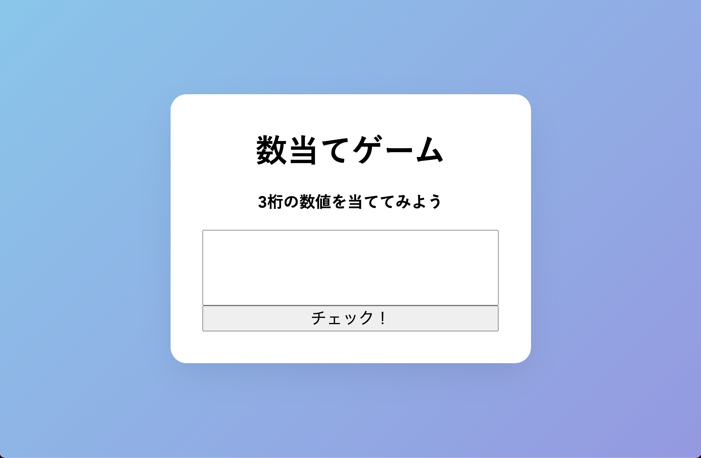
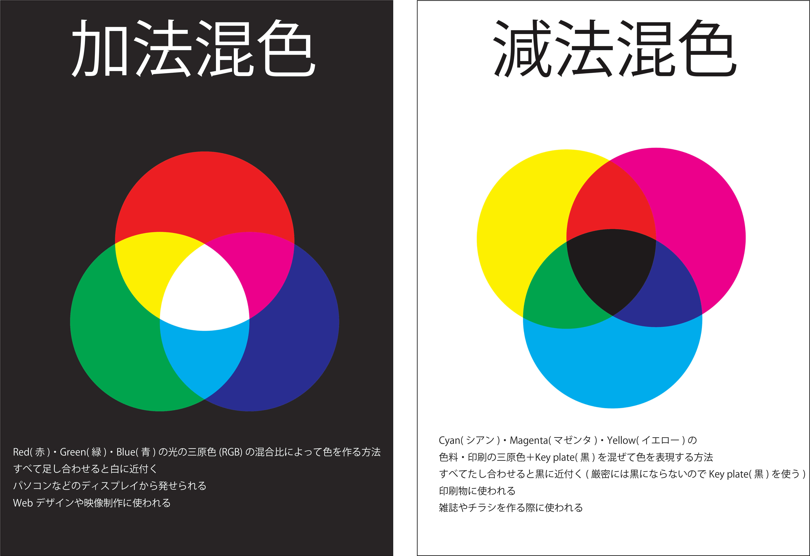
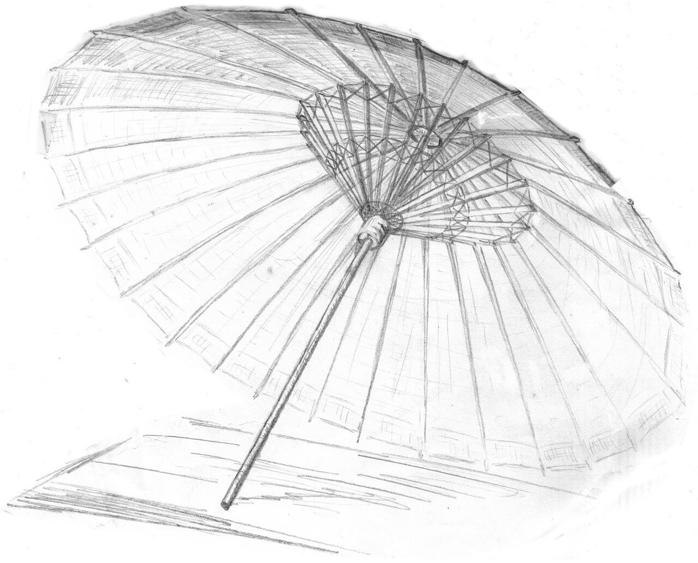
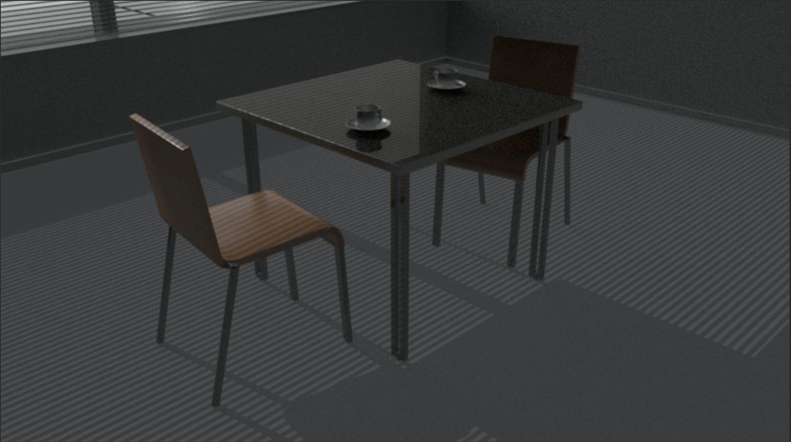
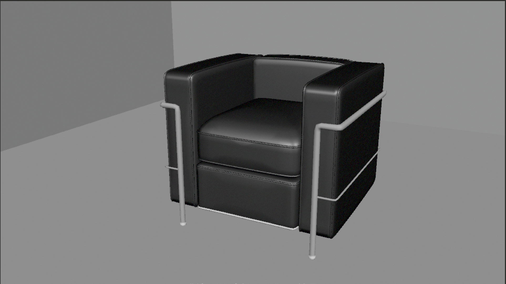

-
 グローバルナビゲーションを使用したサイト
グローバルナビゲーションを使用したサイト
制作時間：３時間
使用ツール：Visual Studio code, HTML, CSS
-

数当てゲームサイト
簡単な３桁の数字を当てる数当てゲームを遊べるサイトを作成
制作時間：１時間
使用ツール：Visual Studio code, HTML, CSS, JavaScript
-
 カウントダウンサイト
カウントダウンサイト
東京オリンピック開会式までカウントダウンするサイトを制作
制作時間：１時間
使用ツール：Visual Studio code, HTML, CSS, JavaScript
-
 画像スライドギャラリー
画像スライドギャラリー
一定時間ごとに画像がスライドするサイトを作成
制作時間：2時間
使用ツール：Visual Studio code, HTML, CSS, JavaScript
-
名刺
架空の電力会社の名刺を制作
制作時間：2時間
使用ツール：Illustrator
-

加法混色・減法混色ポスター
初めて知る人に見せる想定で制作
制作時間：4時間
使用ツール：Illustrator
-
ロゴデザイン
製作時募集されていた高知ゆずのロゴのために制作
外国向けのロゴというコンセプトに沿って作成
制作時間：4時間
使用ツール：Illustrator,Photoshop
-

鉛筆スケッチ 和傘
制作時間：10時間
使用ツール：画用紙，鉛筆
-

テーブル(3DCG)
モデリング・テクスチャを実装
制作時間：3週間
使用ツール：Autodesk MAYA, Photoshop
-
コルビジェ ソファ(3DCG)
モデリングのみ
制作時間：2週間
使用ツール：Autodesk MAYA
-

コルビジェ ソファ(3DCG)
モデリング・テクスチャを実装
制作時間：3週間
使用ツール：Autodesk MAYA,Photoshop